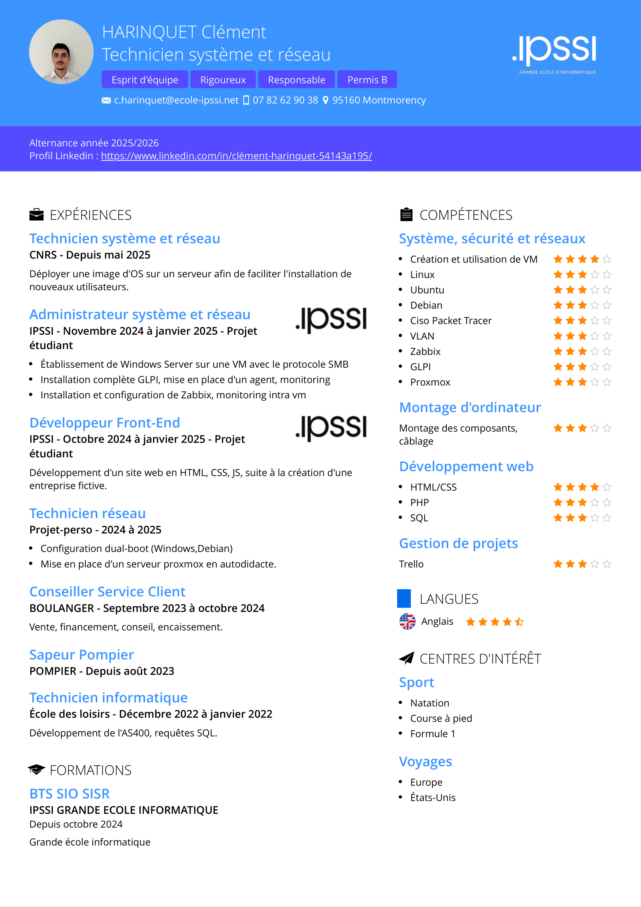

Chargement en cours...
Bonjour, je m’appelle Clément HARINQUET, je suis en formation pour obtenir mon BTS SIO (Services Informatiques aux Organisations) au sein de l’IPSSI – Campus de Paris.
Avant de m’orienter vers l’informatique, j’ai exercé plusieurs métiers dans des domaines variés. Ces expériences m’ont permis de développer des compétences précieuses : organisation, écoute, sens du conseil et qualités relationnelles solides. Ces atouts me servent aujourd’hui au quotidien dans mes missions informatiques et mes échanges professionnels.
De retour en région parisienne, j’ai décidé de donner une nouvelle direction à mon parcours en me reconvertissant dans la cybersécurité, un domaine qui me passionne depuis longtemps. Cette motivation m’a conduit à intégrer le BTS SIO, dans lequel je me spécialise progressivement en infrastructure réseau et sécurité informatique.
Mon objectif est clair : travailler plus tard dans le secteur de la cybersécurité, un domaine stratégique, en constante évolution, où je souhaite m’épanouir professionnellement. Pour y parvenir, je projette de poursuivre mes études en intégrant un Mastère Cybersécurité & Cloud.
Actuellement en cours d’obtention de mon Bac+2, je continue à avancer avec motivation, rigueur et enthousiasme, prêt à relever de nouveaux défis et à contribuer activement au monde de la cybersécurité.
Voici un aperçu de mes compétences techniques acquises et renforcées au fil de mes projets et expériences.

Télécharger mon CVInstallation et configuration complète pour la supervision d’un réseau. Alertes, visualisation, et automatisation.
Déploiement de la solution de gestion de parc informatique, gestion des tickets, utilisateurs et ressources.
Création et gestion d’utilisateurs, mise en place de stratégies de groupe (GPO), et automatisation de tâches.
Configuration d’un pare-feu avec VPN sécurisé. Routage, filtrage et segmentation du réseau.